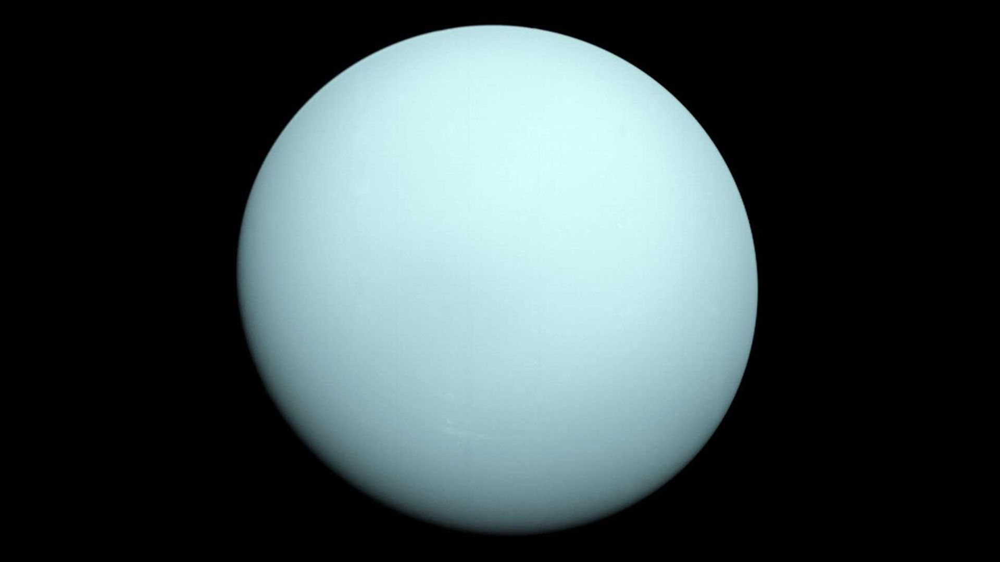

URANUS

Uranus spins sideways, and a day takes about 17 hours. It was the first planet to be found with a telescope.

Uranus spins sideways, and a day takes about 17 hours. It was the first planet to be found with a telescope.